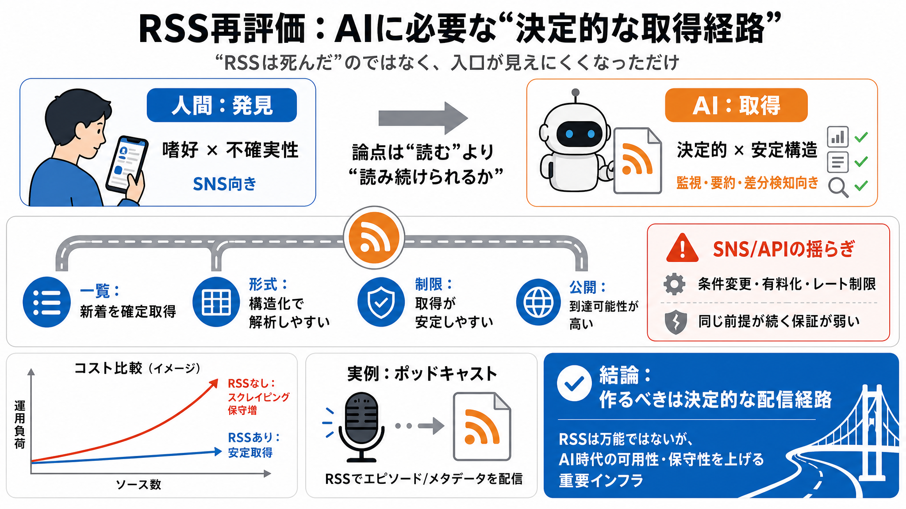

Podcast Statistics 2026: Latest Data, Trends, and Charts | RSS.com Podcast Hosting
podcast audience insights graphic - RSS.com. podcast marketing forecast graphic - RSS.com. Video podcasts are attracting…

“RSSは死んだ”は入口の話で、プロトコル自体は止まっていない。むしろAIエージェントが必要とする「決定的で構造化された取得経路」として再び価値が上がる。
人間は嗜好に左右される不確実な“発見”を求めやすい。AIは差分検知や要約のために、壊れにくい“取得の確実性”が欲しい。
2013年のGoogle Reader終了で“RSSが死んだ”と見なされたが、RSS自体は動作し続けた。失われたのは「利用の入口（導線）」である。
SNSアルゴリズムは可変で、人間の注意には刺さる。だがAIには“同じ前提が続く”保証が弱く、監視・差分検知に向きにくい。
AIにとって重要なのは、SNSのような推測で辿る経路ではなく、RSSのような「プル・公開・一貫構造」。ここでは4つの実務利点を挙げる。
SNSにAPIがあっても、アクセス条件は見直し・有料化・レート制限で変わり得る。継続性の不確実性が、AIの運用リスクになる。
ポッドキャストは現在でもRSSを基盤に配信される。多くのポッドキャストアプリがRSSからエピソードのファイルやメタデータを取得している。
RSSがないとスクレイピングが必要になり、サイト改修・CAPTCHA・ブロックで保守が増える。ソース数が増えるほど失敗モードが指数的に重くなる。
RSSは「エージェントが見つけられる」だけでなく、「読み続けられる」ための条件を作る。結論はRSSを万能視せず、可用性と保守性を上げるインフラとして位置づけること。
AI時代の流通戦略では、取得安定性が運用コストと交渉可能性に直結する。筆者の整理（要点）を6つに圧縮する。
RSSは“AIが読めるか”ではなく“壊れにくく構造化されて継続取得できるか”が論点。ここでは代表的な疑問の要点だけ整理する。
決定的な配信経路。書き手や組織はRSSフィードを整備し、AIエージェントが確実に到達・継続取得できる状態を作るべきだ。
podcast audience insights graphic - RSS.com. podcast marketing forecast graphic - RSS.com. Video podcasts are attracting…
10 Best Tech & AI RSS Feeds (2026) — Feed URLs You Can Copy Now. # 10 Best Tech & AI RSS Feeds (2026) — Feed URLs You Ca…
# Best Open-Source Web Scraping Libraries in 2026. Best Open-Source Web Scraping Libraries in 2026 image. ## State of We…
## The Top AI Web Scrapers of 2026: An Honest Review. If you've managed a web scraping pipeline in the last few years, y…
# Best AI News RSS Feeds in 2026: 8 Trusted Sources. **The best AI news RSS feeds in 2026 are OpenAI News, Hugging Face …